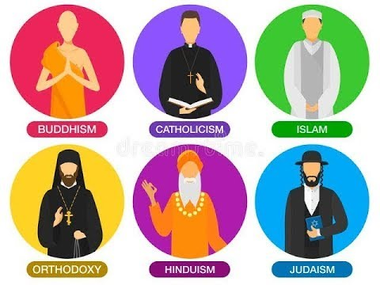

Función de la religión
La religión tiene por función la consolidación de un sistema de valores que permita, por un lado, la cohesión del grupo
social en función de un proyecto común, y por el otro, crear cierto grado de satisfacción espiritual mediante la fe para
superar el sufrimiento y alcanzar la felicidad.
Todas las religiones tienen sus bases y fundamentos en relatos simbólicos/históricos llamados mitos, entendiendo como
mito un relato que explica el origen de la vida, la justificación de su estado y su proyección de futuro.
Caracteristicas
- Se estructura en torno a la creencia en una o más fuerzas superiores al ser humano
- Es una interpretación de la vida, a la que atribuye un valor máximo.
- Justifica las características de la vida, por lo que brinda consuelo y/o esperanza.
- Distingue entre lo sacro y lo profano.
- Construye un código ético.
- Conforma un proyecto de futuro.
- Favorece la cohesión del grupo que la practica.
- Se proyecta mediante símbolos, tales como mitos o relatos (orales o escritos), objetos de arte sacro, expresiones
corporales y rituales.
- Necesita un profeta o chamán.
- Aquellas religiones que se escriben, dan lugar a templos, sacerdotes y sacrificios (u ofrendas).
TIPOS DE RELIGION
Las religiones, asimismo, pueden clasificarse según distintos criterios, como su origen, su tipo de revelación o su
concepción teológica. La concepción teológica, por su parte, se puede dividir en:
